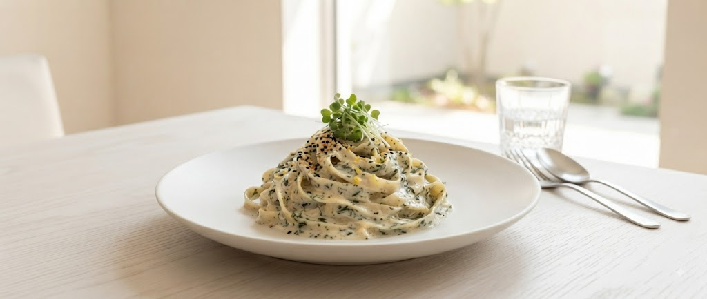

OWNER STORY
「古民家に、新しい息吹を吹き込む」
オーナーシェフ小本元が2007年12月にオープンしたル クレエ。昭和初期の古民家を自らリノベーションし、隠れ家としての魅力を磨き上げました。本格イタリアンを誰もが楽しめる価格で提供するという、開店当初からの約束を守り続けています。
「最高の時間だった」というお声が、私の最高の喜びです。
扉を開けると、そこは昭和初期の古民家を再生した別世界。
アンティーク家具、ステンドグラス、そして漂う岩のりの香り。
都会の喧騒を忘れ、大切な人と心ゆくまで語り合える場所です。

当店の看板メニュー「岩のりのクリームパスタ」。一口食べれば、濃厚なクリームの奥から薪の香りが鼻やかに広がります。素材へのこだわり、調理への情熱。それらを驚くほどリーズナブルな価格でお届けするのが、ル クレエの流儀です。
オーナーシェフ小本元が2007年12月にオープンしたル クレエ。昭和初期の古民家を自らリノベーションし、隠れ家としての魅力を磨き上げました。本格イタリアンを誰もが楽しめる価格で提供するという、開店当初からの約束を守り続けています。
「最高の時間だった」というお声が、私の最高の喜びです。
「お料理が一つひとつ丁寧で、本当にきれい。誕生日の祝いで利用しましたが、個室の提供やデザートメッセージまで用意してくださり、二人とも大満足。最高の記念日になりました。」
— 50代 女性 / 記念日利用「泊まったホテルのそばでふらっと予約しましたが、あまりに安くて衝撃！シェフのこだわりがたっぷり伝わってくる料理。偶然にも月一の生演奏の日で、最高の気分でした。」
— 30代 女性 / 旅行者ル クレエが準備中の「あったら嬉しい」新サービス
北海道の四季折々の旬食材（春の山菜・秋のポルチーニ茸・冬の道産白子やエゾシカ等）を惜しみなく使用した、期間限定の贅沢ディナーコースを展開予定。
※LINE友だち限定で先行予約案内をお届けします看板メニュー「岩のりのクリームソース」をご自宅でも。急速冷凍したシェフ特製ソースと生パスタをセットにしたテイクアウト・全国発送用ギフトボックス。
※店頭お持ち帰りからスタート予定札幌市営地下鉄東線「北13条東駅」3番出口より徒歩3分
Googleマップで開く